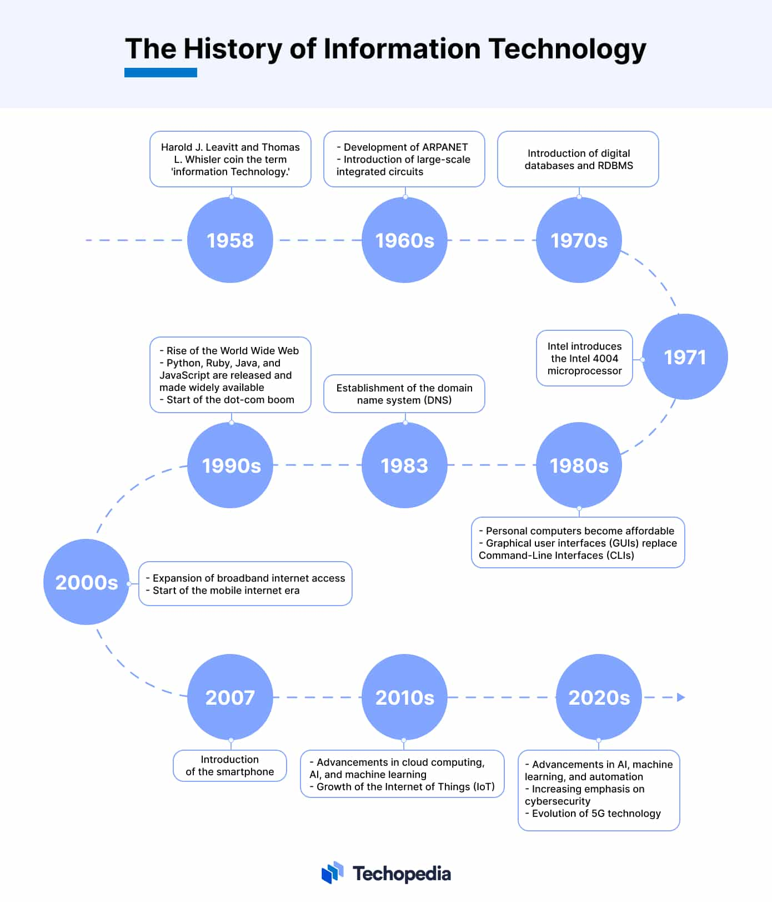

Explore the evolution of technology, from the earliest computers to modern innomvations in software, the internet and telecommunications.
Technology has transformed over the decades. Here are how computers evolved: Supercomputers (1940s to present); High-speed machines used in scientific research. Mainframes (1950s to present) ; Large-scale computers for businesses and government institutions. Minicomputers (1960s to 1980s) ; Compact yet powerful computing tools for specialized applications. Microcomputers (1970s to present) ; Personal computers revolutionizing everyday life. Mobile & Wearable Devices (1990s to present) ; Smartphones and smartwatches bringing computing to your fingertips.
Software has played a crucial role in shaping the digital world, evolving from simple machine code to sophisticated cloud-based and AI-driven applications. In the early days (1940s to 1950s), computers were programmed using low-level machine language and assembly code, requiring direct interaction with hardware. By the 1960s and 1970s, operating systems like UNIX and MS-DOS emerged, revolutionizing computing by enabling multi-tasking and user-friendly interfaces. The 1980s and 1990s saw an explosion in personal and productivity software, with graphical user interfaces (GUIs) like Windows and Mac OS making computers more accessible to the average user, while office suites and multimedia applications expanded functionality. The 2000s introduced cloud computing, allowing software to run online rather than being installed on individual machines, facilitating collaboration and remote work. Today, AI-powered tools, automation, and advanced computing platforms drive innovation, enhancing efficiency and reshaping industries worldwide. Software continues to evolve, adapting to the ever-changing technological landscape and the needs of users.
The internet has revolutionized global communication, transforming how people access information, share content, and interact across borders. It began in the 1960s with ARPANET, an early network developed for military and academic purposes. By the 1990s, Tim Berners-Lee introduced the World Wide Web, enabling websites, hyperlinks, and multimedia content to flourish. The internet soon expanded beyond research institutions, becoming an essential part of everyday life. The 2000s marked the rise of social media platforms like Facebook, Twitter, and Instagram, changing how people communicate and engage with businesses and entertainment. E-commerce also flourished, allowing companies to operate online and consumers to shop globally. Today, advancements such as 5G, artificial intelligence, and the Internet of Things (IoT) are pushing digital interactions even further, enabling ultra-fast connectivity, smart automation, and real-time data processing.
Telecommunications, has been the backbone of human communication for centuries. The telegraph and telephone revolutionized long-distance messaging in the 19th century, laying the groundwork for instant global conversations. Radio and television followed in the 20th century, expanding access to news, entertainment, and mass communication. By the late 20th century, mobile phones and satellite communications allowed people to stay connected regardless of location, ushering in the era of wireless networking. Fiber-optic technology improved transmission speeds, leading to high-definition media and efficient data transfers. In the 21st century, artificial intelligence and automation have enhanced telecommunications further, powering voice assistants, chatbots, and personalized customer service experiences. As technology advances, telecommunications continues to evolve, shaping the future of human connection and information exchange.
For more information, contact us at: kahliallisoneunis@icloud.com.